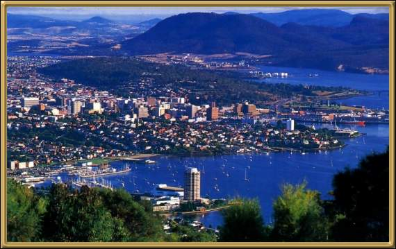

Hobart is the capital of Tasmania. The area was settled in 1803 and in Old Hobart Town you'll still find many of the original buildings. One of the major attractions in terms of nightlife is the Wrest Point Hotel Casino, which was the first 'legal' casino in Australia. The city itself is a very pretty, friendly, small city, with a great deal of historic interest. The views over the Derwent River are spectacular and a visit to Constitution Dock is definitely in order.
Photographer: Unknown